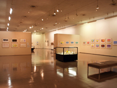

KURASHIKI CITY ART MUSEUM倉敷市立美術館
1960年（昭和35年）に丹下健三設計により市庁舎として建てられ、1983年（昭和58年）に展示美術館として開館し、1987年（昭和62年）に現在の倉敷市立美術館に名称が変更されました。館には平成21年現在11,000点程の作品が収蔵されており、そのうち8,400点余りが池田遙邨の作品でその他は郷土ゆかりの作家をはじめ多彩な作品が収蔵され、洋画、日本画、現代美術など江戸期～現代にかけて幅広く多岐に渡ります。
外観
コンクリート打ちっぱなしの外観は、「現代の校倉造り」と呼ばれ、建物も作品となっています。
展示室

展示室は、1階に第1展示室、2階に第2・第3展示室があり、市民による展示の他、特別展示やコレクション展などが行われます。
※写真は、第2展示室の特別展示期間中の展示です。
講堂
3階講堂、会議室では市民によるコンサートや俳句の会、美術教室、研究会、学会、講演会など生涯学習に関する内容で市民が利用出来るよう貸出しされています。その他、美術室では石版画や銅版画、石膏デッサン、水彩画、日本画の講座も開かれています。
取材協力：倉敷市立美術館
公式サイトをみる
一覧に戻る